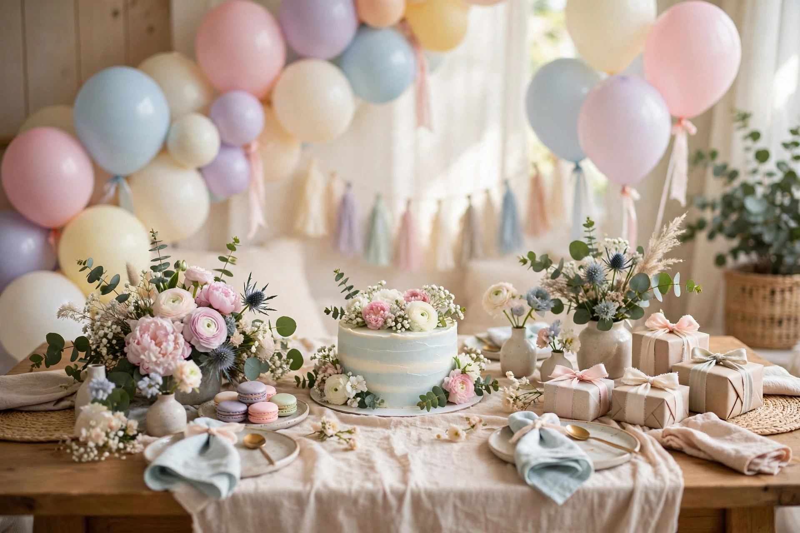

20 Baby Shower Ideas That Feel Special Without the Stress
26 Nov 2026 · Kashif Hameed

Gentle themes, sweet food, simple games and a calm plan — everything you need for a baby shower the mum-to-be will truly enjoy.
Who this is for, and what it costs
This guide is for anyone hosting a baby shower — a friend, sister, mum, aunt or colleague — for a mum-to-be in the United States, the United Kingdom or Canada. It suits 10 to 20 guests, usually women, though a mixed shower with partners and family works well too, and it works at home, in a garden or in a small hall.
Cost level: low to medium. A simple baby shower for 15 guests typically costs around $100 to $200 in total (roughly £80 to £160, or $130 to $260 Canadian), including food, cake, decorations, games and a small favour for each guest. A very simple shower can be done for around $60, and a bigger shower with a hired venue will cost more — we say where the money goes. Time: about 2 to 3 hours to plan and shop, 1 to 2 hours to set up, and 2 hours for the shower itself. Most ideas below take 10 to 20 minutes to prepare, and the mum-to-be should not have to do any of the work.
The 20 ideas
Gentle themes
- Pastel rainbow. Soft pink, blue, yellow and green balloons, plates and napkins, with a simple rainbow cake.
- Woodland animals. Soft browns and greens, with paper animals, leaves and a “welcome to the woodland” sign.
- Tea party. A pretty tablecloth, teacups, a teapot and small sandwiches and cakes.
- Storybook shower. Choose a favourite children’s book as a theme, and ask each guest to bring a book instead of a card.
- Spring garden. Fresh flowers, greenery and pastel colours, with a garden table outside if the weather allows.
Sweet food and drink
- Mini sandwiches and scones. Small sandwiches, scones with jam and cream, and a pot of tea.
- A simple cake, with a message. A one-layer cake with icing and a message such as “Welcome, little one”, or cupcakes with pastel icing.
- Fruit and cheese platter. A platter of fruit, cheese, crackers and grapes, arranged nicely on a board.
- Lemonade and infused water. Lemonade, water with cucumber and mint, and a pot of tea.
- Cupcakes guests can decorate. Plain cupcakes, icing in pastel colours and sprinkles, so guests can decorate their own.
Simple games — gentle, not embarrassing
- Baby bingo. Give each guest a bingo card with baby items — nappy, bottle, blanket, rattle — and mark them off as gifts are opened.
- Guess the baby’s name. Ask guests to write down their guess for the baby’s name, and put the guesses in a jar for the mum-to-be to read later.
- Advice cards for the mum-to-be. Give each guest a card to write a short piece of advice, a wish or a memory.
- How well do you know mum? A short quiz with gentle questions about the mum-to-be — her favourite food, her first job, her favourite film.
- Decorate a baby onesie. Provide plain white onesies, fabric pens and iron-on patches, and let guests decorate one each.
Decorations, favours and gifts
- Pastel balloons and a banner. A few bunches of pastel balloons, a paper banner that says “Baby Shower”, and a tablecloth in a soft colour.
- Fresh flowers on the table. A few small vases with fresh flowers — daisies, roses or carnations — down the centre of the table.
- A gift table, clearly labelled. Put a table near the door for gifts, with a sign and a pen for a gift list.
- Small favours for guests. A small bag with a tea bag, a biscuit and a thank-you tag, or a small candle in a tin.
- A gift for the mum-to-be, from the host. A small, thoughtful gift — a soft blanket, a book for the baby, or a voucher for a meal — given by the host, not by the group.
Supply and shopping list
For a shower for 15 guests, with typical US prices. Buy only what you need for your chosen theme and games.
- Balloons, banner and tablecloth: around $15–$20
- Fresh flowers: around $12–$15
- Food — sandwiches, scones, fruit, cheese, cake: around $40–$60
- Drinks — lemonade, tea, water: around $8–$12
- Games — bingo cards, advice cards, quiz sheets, onesies and pens: around $20–$30
- Favours, around $1–$2 per guest: around $15–$30 for 15
- Plates, cups, napkins and cutlery: around $8–$12
- A gift for the mum-to-be: around $20–$30
How to plan the shower, step by step
- Ask the mum-to-be first. Ask her what she wants — a big party or a small one, games or no games, a theme or no theme, and who she wants to invite.
- Choose a date and a time. A shower is usually held 4 to 6 weeks before the due date, for 2 hours in the afternoon.
- Send invitations two to three weeks before. Send a simple invitation with the date, time, address, theme and a note about gifts.
- Shop for non-food supplies a week before. Buy balloons, decorations, game supplies and favour items.
- Shop for food and flowers the day before. Buy fresh food and flowers, bake or buy the cake, and store everything covered.
- Set up 2 hours before. Put up decorations, set the food and drinks table, lay out games, and put a comfortable chair for the mum-to-be in a central place, with a cushion, water and a blanket nearby.
- During the shower: follow a calm order. Welcome and food for 30 minutes, one or two games for 30 minutes, gifts for 30 minutes, then cake, favours and goodbyes for the last 30 minutes.
- After the shower: help with thank-yous. Keep a list of who gave what, help the mum-to-be pack gifts, and offer to help write thank-you cards.
Tips that save time and money
- Keep the guest list small. Fifteen guests is easier, cheaper and calmer than thirty. A small shower is not a lesser shower.
- Use one or two pastel colours for decorations, plus white. It looks coordinated without buying a full themed set.
- Ask guests to bring a book instead of a card. It builds a library for the baby, and it costs guests nothing extra.
- Have a comfortable chair, water and a blanket ready for the mum-to-be. She will be tired, and a comfortable seat makes a big difference.
Common mistakes to avoid
- Surprising a mum-to-be who does not want a surprise. Always check first. Some mums love a surprise, and some find it stressful. Ask a close friend or family member if you are unsure.
- Planning games that embarrass guests. Avoid games that involve tasting, smelling or guessing baby food, or games that single out one guest. Choose games that are kind, inclusive and easy.
- Forgetting allergies and dietary needs. Always ask about allergies, dairy, gluten and other needs before you buy food. Label food clearly, and keep a safe option for every guest.
- Expecting the mum-to-be to host. The mum-to-be is the guest of honour, not the host. She should not have to cook, clean or organise. The host does the work, and the mum-to-be enjoys the day.
Variations for different budgets, groups and occasions
On a tight budget (around $60): hold the shower at home, make decorations, serve sandwiches, scones and fruit, play one game, and give a handwritten card as a favour. The shower will still feel special.
For a bigger shower (around $300): hire a small hall or a café, add a professional cake, fresh flowers and a simple entertainer for an hour. Keep the same calm plan — food, one or two games, gifts, cake.
Frequently asked questions
When should a baby shower be held? Usually 4 to 6 weeks before the due date, so the mum-to-be is not too tired, and there is time to use the gifts before the baby arrives. Avoid the last two weeks before the due date.
Who should host a baby shower? A friend, sister, mum, aunt or colleague — anyone close to the mum-to-be, except the mum-to-be herself. It is kind for the host to do the planning, the shopping and the tidying up.
What should guests bring? A gift from the mum-to-be’s list, if she has one, or a book instead of a card. Ask on the invitation, so guests do not have to guess.
Related posts
- 25 Thoughtful Gift Ideas for Her She’ll Actually Love
- 30 Birthday Party Ideas for Kids That Are Easy, Fun and Budget-Friendly
- 20 DIY Party Favours Guests Will Actually Keep
- 25 Cozy Christmas Party Decoration Ideas on a Budget
Last updated: 26 Nov 2026